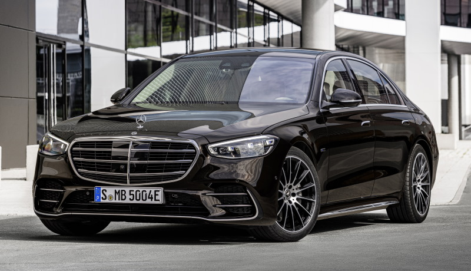

Mercedes-Benz S-class (ծագ. S-Klasse, գերմանական Sonderklasse - «հատուկ դաս» [1] [2]) - գերմանական Mercedes-Benz ընկերության ներկայացուցչական մեքենաների առաջատար շարքը, որը հանդիսանում է Daimler AG կոնցեռնի դուստր ձեռնարկությունը։ . Ներկայացնում է բրենդի դասերի հիերարխիայի մոդելների ամենանշանակալի գիծը: Առաջին գործադիր սեդանները հայտնվեցին 1950-ականների սկզբին, սակայն S դասը պաշտոնապես հայտնվեց միայն 1972 թվականին [1]։ Ներկայումս սերիան բաղկացած է 7 սերունդից՝
W116, ներկայացվել է 1972 թվականին և արտադրվել է մինչև 1980 թվականը;
W126, որի դեբյուտը տեղի ունեցավ 1979 թ.
W140, արտադրված 1991-ից 1999 թվականներին;
W220, որը վաճառքի է հանվել 1998 թվականին և ավարտել արտադրությունը 2005 թվականին;
W221, որը ներկայացվել է 2005 թվականին և հավաքվել մինչև 2013 թվականը ներառյալ;
W222, որը դեբյուտ է ստացել 2013 թվականին և արտադրվել է մինչև 2020 թվականը;
W223, որի պրեմիերան կայացել է 2020 թվականին։